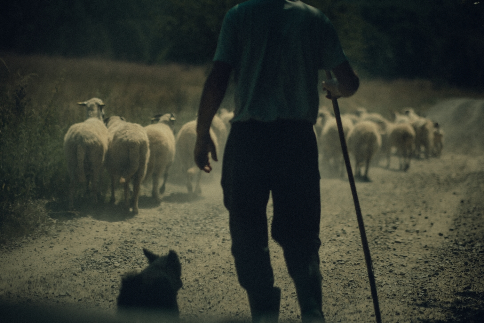
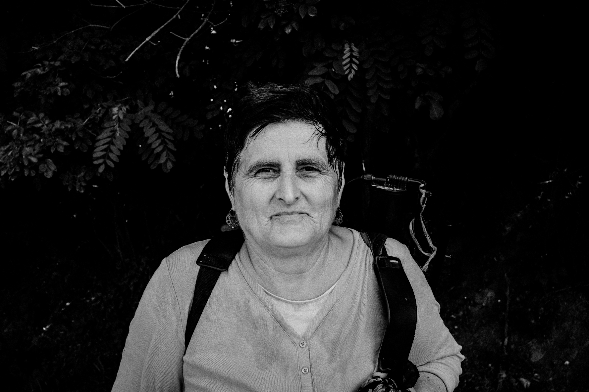
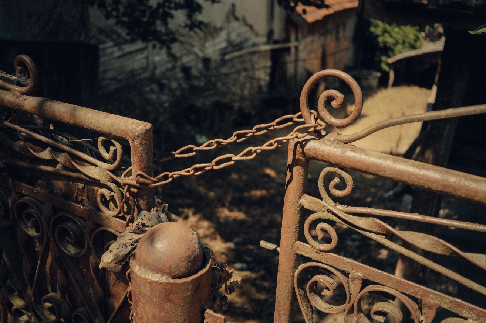
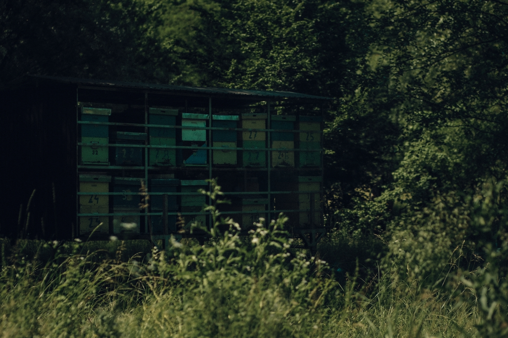
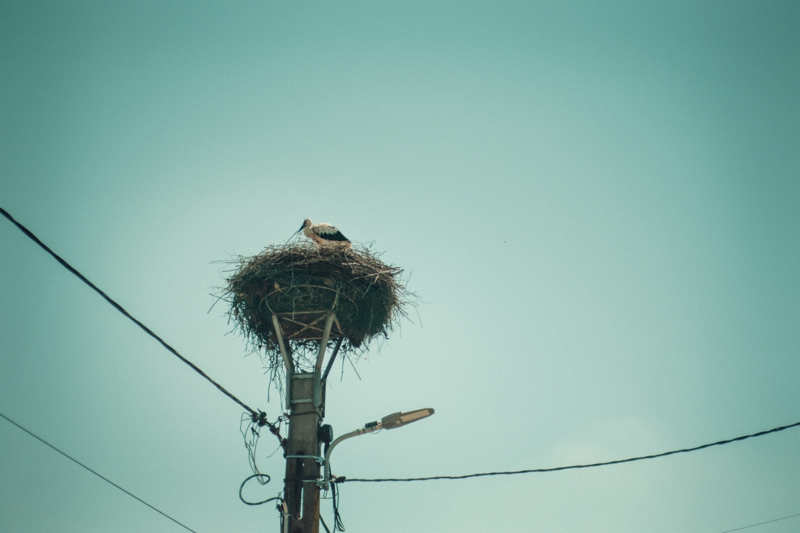
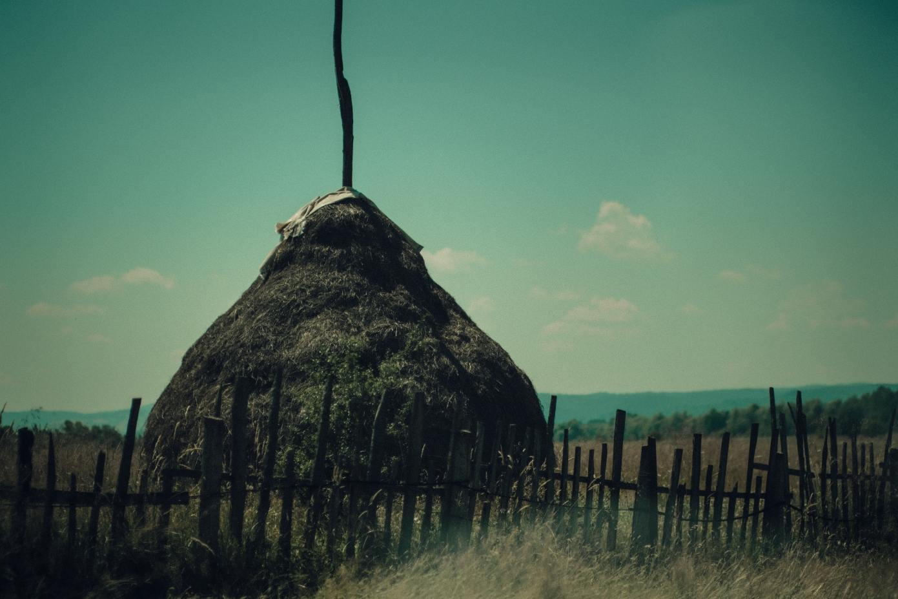
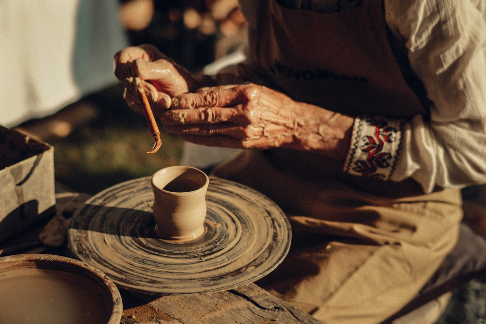
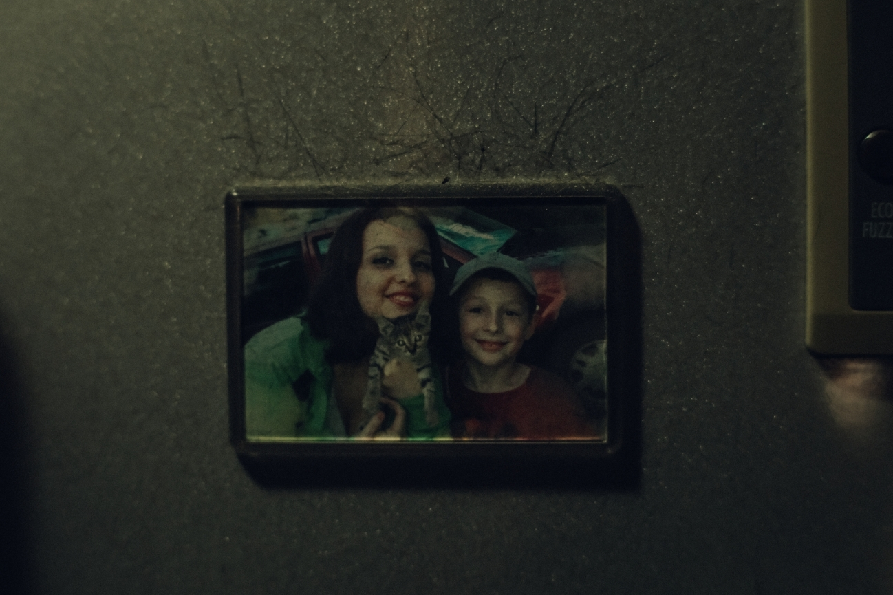
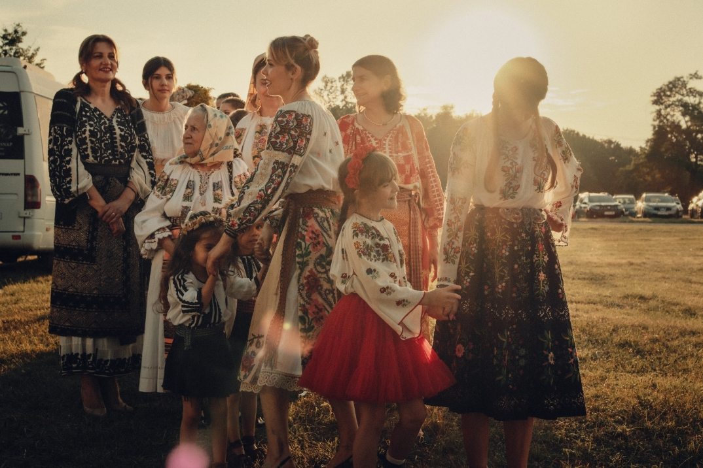

On the Road
On the Road is an ongoing documentary project developed across Romania. Rather than documenting a disappearing world, it observes the coexistence of tradition, migration and everyday life. Built through repeated journeys, the work follows ordinary roads where departures, returns and quiet transformations shape the landscape.








